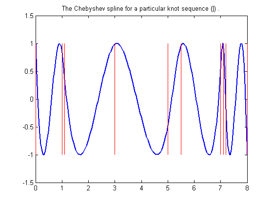
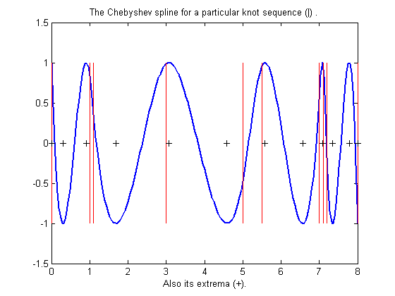
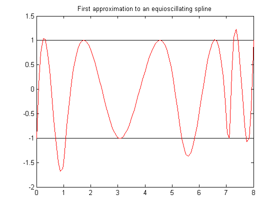
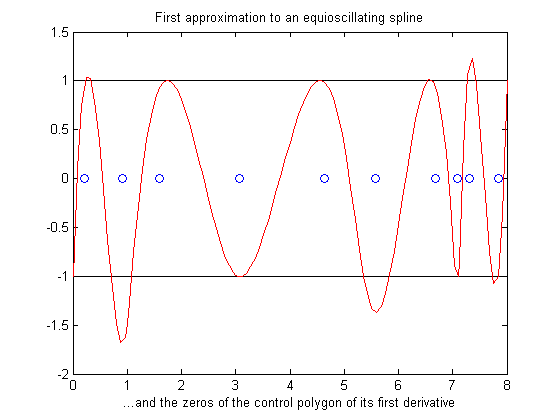
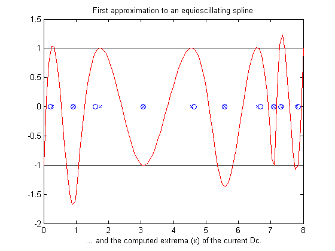
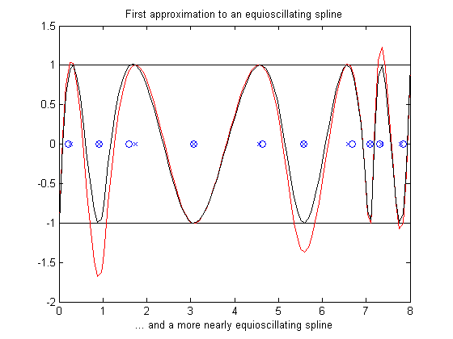
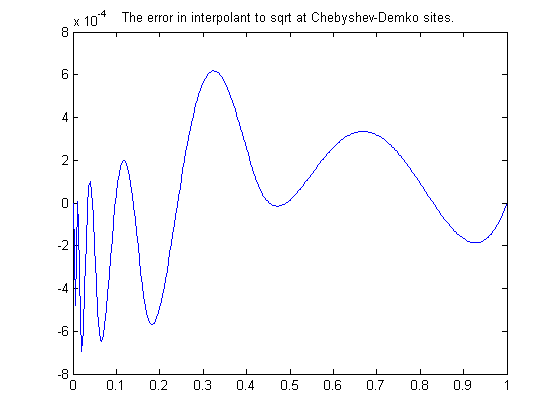

Example: Construction of a Chebyshev Spline
Illustration of toolbox use in a nontrivial problem.
Copyright 1987-2003 C. de Boor and The MathWorks, Inc. $Revision: 1.3 $
Overview
Chebyshev (aka equioscillating) spline defined
By definition, for given knot sequence t of length n+k, C = C_{t,k} is the unique element of S_{t,k} of max-norm 1 that maximally oscillates on the interval [t_k .. t_{n+1}] and is positive near t_{n+1} . This means that there is a unique strictly increasing TAU of length n so that the function C in S_{k,t} given by C(TAU(i))=(-)^{n-i} , all i , has max-norm 1 on [t_k .. t_{n+1}] . This implies that TAU(1) = t_k , TAU(n) = t_{n+1} , and that t_i < TAU(i) < t_{k+i} , all i . In fact, t_{i+1} <= TAU(i) <= t_{i+k-1} , all i . This brings up the point that the knot sequence t is assumed to make such an inequality possible, i.e., the elements of S_{k,t} are assumed to be continuous.
t = augknt([0 1 1.1 3 5 5.5 7 7.1 7.2 8], 4 ); [tau,C] = chbpnt(t,4); xx = sort([linspace(0,8,201),tau]); plot(xx,fnval(C,xx),'linew',2) hold on breaks = knt2brk(t); bbb = repmat(breaks,3,1); sss = repmat([1;-1;NaN],1,length(breaks)); plot(bbb(:), sss(:),'r') title('The Chebyshev spline for a particular knot sequence (|) .')
In short, the Chebyshev spline C looks just like the Chebyshev polynomial. It performs similar functions. For example, its extrema tau are particularly good sites to interpolate at from S_{k,t} since the norm of the resulting projector is about as small as can be.
plot(tau,zeros(size(tau)),'k+') xlabel(' Also its extrema (+).') hold off
In this example, we try to construct C for a given spline space.
We deal with cubic splines with simple interior knots, specified by
k = 4; breaks = [0 1 1.1 3 5 5.5 7 7.1 7.2 8]; t = augknt( breaks, k )
t =
Columns 1 through 7
0 0 0 0 1.0000 1.1000 3.0000
Columns 8 through 14
5.0000 5.5000 7.0000 7.1000 7.2000 8.0000 8.0000
Columns 15 through 16
8.0000 8.0000
... thus getting a spline space of dimension
n = length(t)-k
n =
12
As our initial guess for the TAU, we use the knot averages
TAU(i) = (t_{i+1} + ... + t_{i+k-1})/(k-1)
recommended as good interpolation site choices, and plot the resulting first approximation to C :
tau = aveknt(t,k) b = (-ones(1,n)).^[n-1:-1:0]; c = spapi(t,tau,b); plot(breaks([1 end]),[1 1],'k', breaks([1 end]),[-1 -1],'k'), hold on grid off, lw = 1; fnplt(c,'r',lw) title('First approximation to an equioscillating spline')
tau =
Columns 1 through 7
0 0.3333 0.7000 1.7000 3.0333 4.5000 5.8333
Columns 8 through 12
6.5333 7.1000 7.4333 7.7333 8.0000
For the complete levelling, we use the Remez algorithm. This means that we construct a new TAU as the extrema of our current approximation c to C and try again.
Finding these extrema is itself an iterative process, namely for finding the zeros of the derivative Dc of our current approximation c .
We take the zeros of the control polygon of Dc as our first guess for the zeros of Dc .
The control polygon has the vertices (TSTAR(i),COEFS(i)) , with TSTAR the knot averages for the spline, as supplied by AVEKNT, and COEFS supplied by SPBRK(Dc).
Dc = fnder(c); [knots,coefs,np,kp] = spbrk(Dc); tstar = aveknt(knots,kp);
Here are the zeros of the control polygon of Dc :
npp = [1:np-1]; guess = tstar(npp) - coefs(npp).*(diff(tstar)./diff(coefs)); plot(guess,zeros(1,np-1),'o') xlabel('...and the zeros of the control polygon of its first derivative')
This provides already a very good first guess for the actual extrema of Dc .
Now we evaluate Dc at both these sets of sites:
sites = repmat( tau(2:n-1), 4,1 ); sites(1,:) = guess; values = zeros(4,n-2); values(1:2,:) = fnval(Dc,sites(1:2,:));
... and use two steps of the secant method, getting iterates SITES(3,:) and SITES(4,:), with VALUES (3,:) and VALUES(4,:) the corresponding values of Dc (but guard against division by zero):
for j = 2:3 rows = [j,j-1]; Dcd = diff(values(rows,:)); Dcd(find(Dcd==0)) = 1; sites(j+1,:) = sites(j,:)-values(j,:).*(diff(sites(rows,:))./Dcd); values(j+1,:) = fnval(Dc,sites(j+1,:)); end
We take the last iterate as our new guess for TAU
tau = [tau(1) sites(4,:) tau(n)] plot(tau(2:n-1),zeros(1,n-2),'x') xlabel(' ... and the computed extrema (x) of the current Dc.')
tau =
Columns 1 through 7
0 0.2759 0.9082 1.7437 3.0779 4.5532 5.5823
Columns 8 through 12
6.5843 7.0809 7.3448 7.7899 8.0000
We plot the resulting new approximation c = spapi(t,tau,b) to the Chebyshev spline.
c = spapi(t,tau,b); fnplt( c, 'k', lw ) xlabel('... and a more nearly equioscillating spline') hold off
If this is not close enough, simply try again, starting from this new TAU. For this particular example, already the next iteration provides the Chebyshev spline to graphic accuracy.
The Chebyshev spline for a given spline space S_{k,t} is available as optional output from the command CHBPNT in this toolbox, along with its extrema. These extrema were proposed as good interpolation sites by Steven Demko, hence are now called the Chebyshev-Demko sites. The next slide shows an example of their use.
If you have decided to approximate the square-root function on the interval [0 .. 1] by cubic splines with knot sequence
k = 4; n = 10; t = augknt(((0:n)/n).^8,k);
then a good approximation to the square-root function from that specific spline space is given by
tau = chbpnt(t,k); sp = spapi(t,tau,sqrt(tau));
as is evidenced by the near equi-oscillation of the error.
k = 4; n = 10; t = augknt(((0:n)/n).^8,k);
tau = chbpnt(t,k); sp = spapi(t,tau,sqrt(tau));
xx = linspace(0,1,301); plot(xx, fnval(sp,xx)-sqrt(xx))
title('The error in interpolant to sqrt at Chebyshev-Demko sites.')